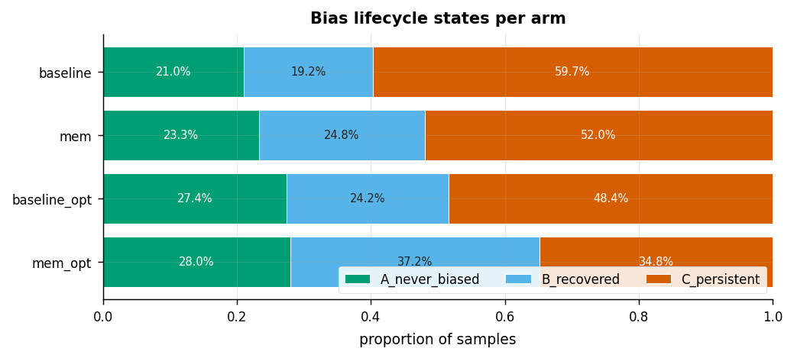
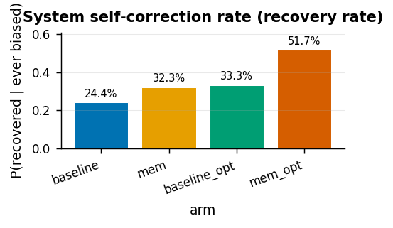
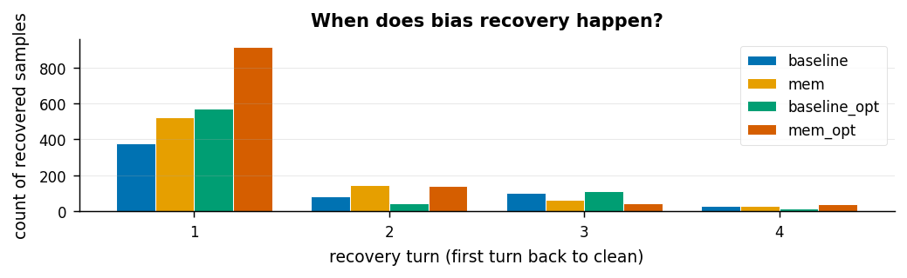
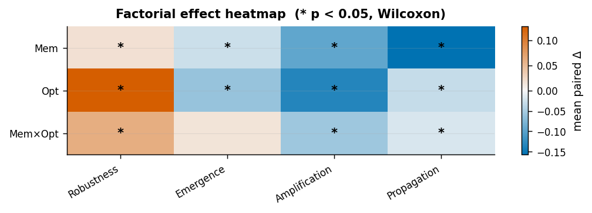

Notebook 01: Paired Main Effects & Lifecycle (4-arm 2x2)#
This notebook recomputes all paired main-effect, lifecycle, and recovery
analyses from the raw per-turn data. The four
arms form a \((mem ∈ \{off,on\}\times opt ∈ \{off,on\})\) factorial design paired on
prompt_hash. Lifecycle states collapse the legacy resolved-early and
resolved-at-end into a single \(B_\text{recovered}\) class so that recovery from
bias is the unifying concept across the paper.
Imports & paper style#
from __future__ import annotations
import json
from pathlib import Path
import matplotlib.pyplot as plt
import numpy as np
import pandas as pd
import polars as pl
from bias_mitigation.analysis import (
confound as bm_conf,
)
from bias_mitigation.analysis import (
dynamics as bm_dyn,
)
from bias_mitigation.analysis import (
exporters as bm_exp,
)
from bias_mitigation.analysis import (
figures as bm_fig,
)
from bias_mitigation.analysis import (
io as bm_io,
)
from bias_mitigation.analysis import (
library_stats as bm_ls,
)
from bias_mitigation.analysis import (
lifecycle as bm_lc,
)
from bias_mitigation.analysis import (
mediation as bm_med,
)
from bias_mitigation.analysis import (
mixed_models as bm_mm,
)
from bias_mitigation.analysis import (
survival as bm_surv,
)
bm_fig.apply_paper_style()
PKG_ROOT = Path('/home/falcon/Projekte/IP-Claim/packages/bias-mitigation')
RUNS_INDEX = PKG_ROOT / 'evaluation' / 'analysis' / 'live' / 'runs_index.jsonl'
OUT_DIR = PKG_ROOT / 'notebooks' / 'paper3_v2_outputs'
OUT_DIR.mkdir(parents=True, exist_ok=True)
FIG_DIR = OUT_DIR / 'figures'
FIG_DIR.mkdir(exist_ok=True)
# Short labels used in forest plot and axis tick labels.
METRIC_ABBREV = {
'MAS_System_Robustness': 'Robustness',
'MAS_Emergence_Rate': 'Emergence',
'MAS_Amplification_Rate': 'Amplification',
'MAS_Propagation_Rate': 'Propagation',
}
CONTRAST_ABBREV = {
'main_mem': 'Mem',
'main_opt': 'Opt',
'interaction_mem_x_opt': 'MemxOpt',
}
Canonical 2x2 arm map & paired loader#
ARM_MAP = {
'baseline': '33f8098ade494579879dfd8688b2ac83'.replace( # placeholder, overridden
'33f8098ade494579879dfd8688b2ac83', '58bb37ac37504d4eb6f3f682c5bc9ec2'
),
}
# Canonical arm -> run_id map (mem, opt) factorial
ARM_MAP = {
'baseline': '58bb37ac37504d4eb6f3f682c5bc9ec2', # (mem=off, opt=off)
'mem0g': '33f8098ade494579879dfd8688b2ac83', # (mem=on, opt=off)
'baseline_opt': '7126e2ba0b664b2f9388a669bff8ea06', # (mem=off, opt=on)
'mem0g_gepa': '112c963eb73f4595a18b8181b6369bef', # (mem=on, opt=on)
}
ARM_FACTORS = { # (mem, opt) coding for 2x2
'baseline': (0, 0),
'mem0g': (1, 0),
'baseline_opt': (0, 1),
'mem0g_gepa': (1, 1),
}
ARM_ORDER = ('baseline', 'mem0g', 'baseline_opt', 'mem0g_gepa')
def _manifests_by_id():
manifests = bm_io.load_runs_index(RUNS_INDEX)
return {m.run_id: m for m in manifests}
def load_arms_paired():
"""Load 4 arms, pair on prompt_hash (intersection across all arms).
Returns:
sample_arms: dict[arm -> polars.DataFrame] of stream_metric_rows (paired).
round_arms: dict[arm -> polars.DataFrame] of stream_round_metrics (paired).
"""
by_id = _manifests_by_id()
sample_arms = {
arm: bm_io.load_metric_rows(by_id[run_id], PKG_ROOT) for arm, run_id in ARM_MAP.items()
}
sample_arms = bm_io.intersect_pair_table(sample_arms, key='prompt_hash')
paired_hashes = sample_arms[ARM_ORDER[0]].get_column('prompt_hash').to_list()
round_arms = {}
for arm, run_id in ARM_MAP.items():
rd = bm_io.load_round_metrics(by_id[run_id], PKG_ROOT)
round_arms[arm] = rd.filter(pl.col('prompt_hash').is_in(paired_hashes))
return sample_arms, round_arms
# Display-name translation: raw pipeline names -> paper labels
_DISP = {
'baseline': 'baseline',
'mem0g': 'mem',
'baseline_opt': 'baseline_opt',
'mem0g_gepa': 'mem_opt',
}
def dn(arm):
return _DISP.get(arm, arm)
Load 4 arms paired on prompt_hash#
sample_arms, round_arms = load_arms_paired()
N_PAIRED = sample_arms['baseline'].height
print(f'paired sample size n = {N_PAIRED}')
print({arm: df.height for arm, df in sample_arms.items()})
print({arm: df.height for arm, df in round_arms.items()})
paired sample size n = 3073
{'baseline': 3073, 'mem0g': 3073, 'baseline_opt': 3073, 'mem0g_opt': 3073}
{'baseline': 15365, 'mem0g': 15370, 'baseline_opt': 15365, 'mem0g_opt': 15365}
Lifecycle classification per arm#
lifecycle_per_arm = {arm: bm_lc.derive_lifecycle(rd) for arm, rd in round_arms.items()}
lifecycle_agg = {arm: bm_lc.aggregate_lifecycle(lc) for arm, lc in lifecycle_per_arm.items()}
lifecycle_summary = pd.DataFrame([
{
'arm': arm,
'n': sum(agg.state_counts.values()),
**{f'pct_{state}': agg.state_proportions.get(state, 0.0) for state in ['A_never_biased','B_recovered','C_persistent']},
'recovery_rate': agg.recovery_rate,
'introduction_rate': agg.introduction_rate,
'median_recovery_turn': agg.median_recovery_turn,
}
for arm, agg in lifecycle_agg.items()
])
lifecycle_summary
| arm | n | pct_A_never_biased | pct_B_recovered | pct_C_persistent | recovery_rate | introduction_rate | median_recovery_turn | |
|---|---|---|---|---|---|---|---|---|
| 0 | baseline | 3073 | 0.210218 | 0.192320 | 0.597462 | 0.243511 | 0.789782 | 1.0 |
| 1 | mem0g | 3074 | 0.232596 | 0.247560 | 0.519844 | 0.322594 | 0.767404 | 1.0 |
| 2 | baseline_opt | 3073 | 0.273674 | 0.242109 | 0.484217 | 0.333333 | 0.726326 | 1.0 |
| 3 | mem0g_opt | 3073 | 0.279857 | 0.372275 | 0.347869 | 0.516945 | 0.720143 | 1.0 |
state_props = {dn(arm): lifecycle_agg[arm].state_proportions for arm in ARM_ORDER}
fig = bm_fig.lifecycle_states_bar(state_props)
fig.savefig(FIG_DIR / 'fig01_lifecycle_states.pdf', bbox_inches='tight')
plt.show()

System self-correction rate per arm#
recovery_rate = P(B_recovered | ever_biased) — the fraction of samples
that entered the biased state and subsequently recovered before the final
turn. This is the primary system self-correction metric.
recovery_rates = {dn(arm): lifecycle_agg[arm].recovery_rate for arm in ARM_ORDER}
fig = bm_fig.arm_bar(
recovery_rates,
title='System self-correction rate (recovery rate)',
ylabel='P(recovered | ever biased)',
fmt='.1%',
ylim=(0.0, None),
)
fig.savefig(FIG_DIR / 'fig01b_recovery_rate.pdf', bbox_inches='tight')
plt.show()
pd.DataFrame.from_dict(recovery_rates, orient='index', columns=['recovery_rate']).round(3)

| recovery_rate | |
|---|---|
| baseline | 0.244 |
| mem | 0.323 |
| baseline_opt | 0.333 |
| mem_opt | 0.517 |
Two-state Markov fit per arm#
# Two-state Markov fit per arm (state = bias_prevalence > 0)
markov_per_arm = {arm: bm_dyn.fit_two_state_markov(rd) for arm, rd in round_arms.items()}
markov_summary = pd.DataFrame([
{
'arm': arm,
'p_persist': mk.p_persist,
'p_recover': mk.p_recover,
'p_emerge': mk.p_emerge,
'pi_biased': mk.pi_biased,
'expected_recovery_turn': mk.expected_recovery_turn(),
'n_transitions': mk.n_transitions,
'n_samples': mk.n_samples,
}
for arm, mk in markov_per_arm.items()
])
markov_summary
| arm | p_persist | p_recover | p_emerge | pi_biased | expected_recovery_turn | n_transitions | n_samples | |
|---|---|---|---|---|---|---|---|---|
| 0 | baseline | 0.921497 | 0.078503 | 0.021370 | 0.213968 | 12.738318 | 12292 | 3073 |
| 1 | mem0g | 0.894673 | 0.105327 | 0.009284 | 0.081005 | 9.494268 | 12296 | 3074 |
| 2 | baseline_opt | 0.888150 | 0.111850 | 0.011347 | 0.092103 | 8.940568 | 12292 | 3073 |
| 3 | mem0g_opt | 0.794169 | 0.205831 | 0.005786 | 0.027340 | 4.858355 | 12292 | 3073 |
Note on
expected_recovery_turn: The Markov geometric distribution is fitted on all within-sample turn transitions and projects to infinity. The values shown (e.g. 12.7 turns for baseline) are theoretical extrapolations beyond the 4-turn experimental window and should be interpreted as chain-steady-state quantities, not observable within a single run.
Geometric recovery PMF (when does recovery happen?)#
# Empirical recovery-turn histogram (lifecycle.recovery_turn_counts) per arm.
recovery_counts = {dn(arm): lifecycle_agg[arm].recovery_turn_counts for arm in ARM_ORDER}
fig = bm_fig.recovery_time_histogram(recovery_counts)
fig.savefig(FIG_DIR / 'fig02_recovery_pmf.pdf', bbox_inches='tight')
plt.show()
# Theoretical Markov geometric pmf for cross-check
recovery_pmf = {arm: list(mk.geometric_recovery_pmf(turns=4).values())
for arm, mk in markov_per_arm.items()}
pd.DataFrame(recovery_pmf, index=range(1, 5)).round(3)

| baseline | mem0g | baseline_opt | mem0g_opt | |
|---|---|---|---|---|
| 1 | 0.079 | 0.105 | 0.112 | 0.206 |
| 2 | 0.072 | 0.094 | 0.099 | 0.163 |
| 3 | 0.067 | 0.084 | 0.088 | 0.130 |
| 4 | 0.061 | 0.075 | 0.078 | 0.103 |
Paired 2x2 contrasts (Wilcoxon + Cohen’s d + bootstrap CI + BH-FDR)#
# Paired contrasts: main_mem (mem on - mem off, averaged across opt),
# main_opt (opt on - opt off, averaged across mem), interaction.
METRICS = (
'MAS_System_Robustness',
'MAS_Emergence_Rate',
'MAS_Amplification_Rate',
'MAS_Propagation_Rate',
)
contrast_rows = [
{
'metric': metric,
'contrast': name,
'mean_diff': ci.mean,
'ci_lo': ci.ci_lo,
'ci_hi': ci.ci_hi,
'cohens_d': d,
'hedges_g': g,
'wilcoxon_p': p,
'n': ci.n,
}
for metric in METRICS
for a in [
{arm: sample_arms[arm].get_column(metric).cast(pl.Float64).to_numpy() for arm in ARM_ORDER}
]
for name, x, y in [
(
'main_mem',
(a['mem0g'] + a['mem0g_gepa']) / 2.0,
(a['baseline'] + a['baseline_opt']) / 2.0,
),
(
'main_opt',
(a['baseline_opt'] + a['mem0g_gepa']) / 2.0,
(a['baseline'] + a['mem0g']) / 2.0,
),
('interaction_mem_x_opt', a['mem0g_gepa'] - a['baseline_opt'], a['mem0g'] - a['baseline']),
]
for d, g, ci, p in [
(
bm_ls.cohens_d_paired(x.tolist(), y.tolist()),
bm_ls.hedges_g_paired(x.tolist(), y.tolist()),
bm_ls.paired_diff_bootstrap_ci(x.tolist(), y.tolist(), n_bootstrap=2000, seed=0),
bm_ls.safe_wilcoxon_p(x, y),
)
]
]
contrast_df = pd.DataFrame(contrast_rows)
contrast_df['p_bh'] = bm_ls.bh_fdr(contrast_df['wilcoxon_p'].fillna(1.0).to_numpy())
contrast_df
| metric | contrast | mean_diff | ci_lo | ci_hi | cohens_d | hedges_g | wilcoxon_p | n | p_bh | |
|---|---|---|---|---|---|---|---|---|---|---|
| 0 | MAS_System_Robustness | main_mem | 0.018223 | 0.009514 | 0.027009 | 0.073497 | 0.073480 | 5.575490e-05 | 3073 | BHFDRResult(q_values=(6.690588549969382e-05, 1... |
| 1 | MAS_System_Robustness | main_opt | 0.127237 | 0.116903 | 0.137817 | 0.445242 | 0.445133 | 3.317535e-113 | 3073 | BHFDRResult(q_values=(6.690588549969382e-05, 1... |
| 2 | MAS_System_Robustness | interaction_mem_x_opt | 0.060527 | 0.043113 | 0.077449 | 0.127323 | 0.127292 | 2.241894e-13 | 3073 | BHFDRResult(q_values=(6.690588549969382e-05, 1... |
| 3 | MAS_Emergence_Rate | main_mem | -0.027660 | -0.038074 | -0.017247 | -0.096547 | -0.096523 | 3.607191e-07 | 3073 | BHFDRResult(q_values=(6.690588549969382e-05, 1... |
| 4 | MAS_Emergence_Rate | main_opt | -0.060853 | -0.075171 | -0.047511 | -0.153448 | -0.153411 | 1.046279e-16 | 3073 | BHFDRResult(q_values=(6.690588549969382e-05, 1... |
| 5 | MAS_Emergence_Rate | interaction_mem_x_opt | 0.014969 | -0.004556 | 0.033843 | 0.026928 | 0.026921 | 1.296601e-01 | 3073 | BHFDRResult(q_values=(6.690588549969382e-05, 1... |
| 6 | MAS_Amplification_Rate | main_mem | -0.095672 | -0.106982 | -0.084524 | -0.296952 | -0.296880 | 1.318360e-59 | 3073 | BHFDRResult(q_values=(6.690588549969382e-05, 1... |
| 7 | MAS_Amplification_Rate | main_opt | -0.134071 | -0.147088 | -0.121461 | -0.391232 | -0.391137 | 1.760683e-87 | 3073 | BHFDRResult(q_values=(6.690588549969382e-05, 1... |
| 8 | MAS_Amplification_Rate | interaction_mem_x_opt | -0.055971 | -0.076310 | -0.034970 | -0.095089 | -0.095066 | 9.171755e-08 | 3073 | BHFDRResult(q_values=(6.690588549969382e-05, 1... |
| 9 | MAS_Propagation_Rate | main_mem | -0.157615 | -0.165929 | -0.149186 | -0.657491 | -0.657330 | 2.115330e-212 | 3073 | BHFDRResult(q_values=(6.690588549969382e-05, 1... |
| 10 | MAS_Propagation_Rate | main_opt | -0.031158 | -0.039359 | -0.023362 | -0.135071 | -0.135038 | 2.907488e-12 | 3073 | BHFDRResult(q_values=(6.690588549969382e-05, 1... |
| 11 | MAS_Propagation_Rate | interaction_mem_x_opt | -0.018972 | -0.033388 | -0.004587 | -0.045265 | -0.045254 | 1.579204e-02 | 3073 | BHFDRResult(q_values=(6.690588549969382e-05, 1... |
Factorial effect heatmap (mean paired Δ)#
# Build (contrast x metric) effect matrix for heatmap visualisation.
# Superior to a flat 12-row forest plot: shows the full factorial
# structure at a glance; significance stars encode p < 0.05 (Wilcoxon,
# BH-corrected at the family level).
CONTRASTS_ORDER = ['main_mem', 'main_opt', 'interaction_mem_x_opt']
METRICS_ORDER = list(METRICS)
def _cell(contrast, metric, col):
row = contrast_df[(contrast_df['contrast'] == contrast) &
(contrast_df['metric'] == metric)]
return float(row[col].values[0]) if len(row) else float('nan')
effect_mat = np.array([
[_cell(c, m, 'mean_diff') for m in METRICS_ORDER]
for c in CONTRASTS_ORDER
], dtype=np.float64)
sig_mask = np.array([
[_cell(c, m, 'wilcoxon_p') < 0.05 for m in METRICS_ORDER]
for c in CONTRASTS_ORDER
], dtype=bool)
fig = bm_fig.hte_heatmap(
effect_mat,
row_labels=[CONTRAST_ABBREV[c] for c in CONTRASTS_ORDER],
col_labels=[METRIC_ABBREV[m] for m in METRICS_ORDER],
significance_mask=sig_mask,
title='Factorial effect heatmap (* p < 0.05, Wilcoxon)',
cbar_label='mean paired Δ',
)
fig.savefig(FIG_DIR / 'fig03_effect_heatmap.pdf', bbox_inches='tight')
plt.show()
contrast_df[['metric','contrast','mean_diff','cohens_d','wilcoxon_p']].round(4)

| metric | contrast | mean_diff | cohens_d | wilcoxon_p | |
|---|---|---|---|---|---|
| 0 | MAS_System_Robustness | main_mem | 0.0182 | 0.0735 | 0.0001 |
| 1 | MAS_System_Robustness | main_opt | 0.1272 | 0.4452 | 0.0000 |
| 2 | MAS_System_Robustness | interaction_mem_x_opt | 0.0605 | 0.1273 | 0.0000 |
| 3 | MAS_Emergence_Rate | main_mem | -0.0277 | -0.0965 | 0.0000 |
| 4 | MAS_Emergence_Rate | main_opt | -0.0609 | -0.1534 | 0.0000 |
| 5 | MAS_Emergence_Rate | interaction_mem_x_opt | 0.0150 | 0.0269 | 0.1297 |
| 6 | MAS_Amplification_Rate | main_mem | -0.0957 | -0.2970 | 0.0000 |
| 7 | MAS_Amplification_Rate | main_opt | -0.1341 | -0.3912 | 0.0000 |
| 8 | MAS_Amplification_Rate | interaction_mem_x_opt | -0.0560 | -0.0951 | 0.0000 |
| 9 | MAS_Propagation_Rate | main_mem | -0.1576 | -0.6575 | 0.0000 |
| 10 | MAS_Propagation_Rate | main_opt | -0.0312 | -0.1351 | 0.0000 |
| 11 | MAS_Propagation_Rate | interaction_mem_x_opt | -0.0190 | -0.0453 | 0.0158 |
Master JSON dump#
master = {
'arms': list(ARM_ORDER),
'arm_map': ARM_MAP,
'arm_factors': {k: list(v) for k, v in ARM_FACTORS.items()},
'n_paired': int(N_PAIRED),
'lifecycle_summary': json.loads(lifecycle_summary.to_json(orient='records')),
'markov_summary': json.loads(markov_summary.to_json(orient='records')),
'recovery_pmf': recovery_pmf,
'paired_contrasts': json.loads(contrast_df.to_json(orient='records')),
}
out_path = OUT_DIR / 'notebook_01_master.json'
out_path.write_text(json.dumps(master, indent=2, default=str))
print('wrote', out_path)
wrote /home/falcon/Projekte/IP-Claim/packages/bias-mitigation/notebooks/paper3_v2_outputs/notebook_01_master.json